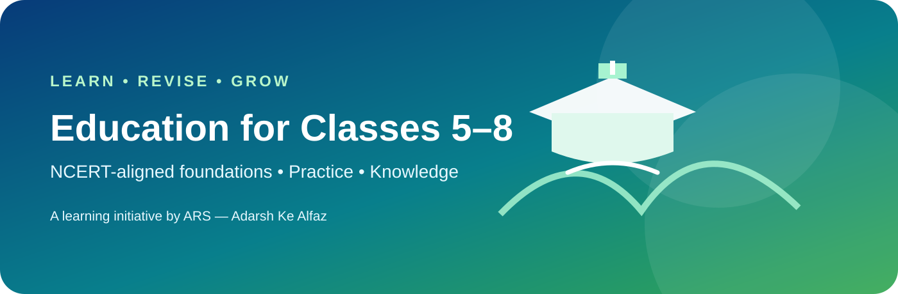

Mathematics
Focus: number sense, fractions, decimals, factors, multiples, measurement and geometry.
- Write the given information first.
- Show each calculation step.
- Check the answer using an estimate.
Learn • Practise • Revise
Concept-first learning with starter notes, practice prompts and revision habits. Align each topic with your school textbook and teacher’s guidance.

Focus: number sense, fractions, decimals, factors, multiples, measurement and geometry.
Focus: plants and animals, materials, force and motion, energy, environment and scientific observation.
Focus: reading, grammar, vocabulary, comprehension, sentence formation and writing.
Focus: history, geography, civics, maps, communities and responsible citizenship.
Focus: India, Bihar, important institutions, environment, science and current-affairs awareness.
Verify date-sensitive information from reliable sources before using it in an exam.
Use short quizzes to diagnose gaps. Revisit incorrect answers after one day, one week and one month.
Open study and revision plan →